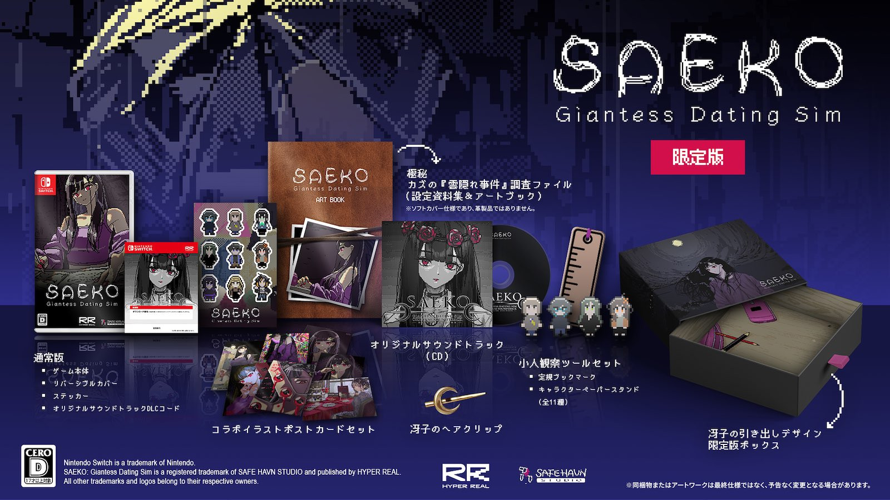
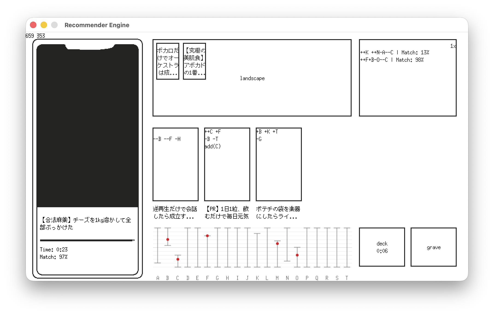

開発日記 2026-02-26 (Switch版発売決定)
こんにちは。私はkypです。この文章を書いているのは2月24日の火曜日ですが、公開はおそらく26日になるでしょう。なぜかといえば......そう......この日に重大発表があるから！
SAEKOのSwitch版が発売されます
「SAEKO: Giantess Dating Sim」のSwitch版が、2026年6月25日に発売されます。すごい！しかも、販売経路はダウンロードだけでなく、なんと物理的なパッケージ版まで発売されます。全国のお店にSAEKOが並ぶ。本当にすごい！
SAEKO: Giantess Dating Sim が6月25日にNintendo Switchで発売されます。 ダウンロード販売のほか、パッケージ版は通常版・限定版の２種類が購入可能です。既に各種ストアで予約が始まっておりますので、ぜひ覗いてみてください！
— SAEKO: Giantess Dating Sim (@safehavn.dev) 2026年2月26日 17:34
[image or embed]
通常のパッケージ版にはゲーム本体のほか、リバーシブルカバー、ステッカー、サウンドトラックのダウンロードカードが付いてきます。店頭に並ぶのはたぶんこれです。しかし、なんと今回は通常版だけでなく、特大の限定版パッケージも発表されました。こちらは通常版の全てに加え、設定資料集、サウンドトラックCD、ポストカード、ペーパースタンドなどなど盛りだくさんの特典が付いてきます。PC版を既に持っているあなたも、さあ、もはや買うしかありません！いやまあ、もちろん、無理にとは言わない......言わないんだけど......。

今回はSwitch版の発売に合わせ、PC版でも新規5言語（フランス語・ドイツ語・ブラジルポルトガル語・ウクライナ語・ロシア語）の実装と、プロトタイプシナリオの追加が行われます。最近の記事で何も言えずに苦しんでいたのはこれです。やっと言えてすっきりしました。
プロトタイプシナリオは、2023年9月、ゲームの発表から数カ月後に初めて出た東京ゲームショウで展示したものです。この日記でたびたび触れている通り、SAEKOは2023年のTGSに出たあと、1からビルドを作り直しているのですが、今回実装されるのはその作り直す前のビルドのために書かれたシナリオとなります。
最初期に作ったシステムはへなちょこだし、シナリオも今読むと実力不足で恥ずかしい部分が多々あるのですが、今回のアップデートではその内容をできるだけ変えずに組み込むことにしました。本編とは一応繋がってますが、矛盾があったらごめんなさい。映画やTVドラマのNG集みたいな感じで、気軽にふわっとプレイしていただくといいんじゃないかなと思います。

その他、限定版に付属する特典についても、コツコツ準備を進めています。実を言えば、まだ鋭意制作中のものが多く、中身を紹介できるのはもう少し先になりそうです。自分たちのゲームのパッケージ版を作れるというのは、滅多にない機会だと思います。不慣れな作業が多いですが、後悔のないように作っていきたいです。
その他
まあ、といいつつ、パッケージ版の準備というのは恐ろしいほど前倒しで進んでいくので、現時点でやれることも徐々に少なくなっています。特に、提出用のビルドはほとんどできてしまったし、グッズの制作は主にチーム内の別メンバー（kohとmaztani）にお願いしまくっているので、空いた時間で私は違うゲームのプロトタイプを作ったりしています。

なんか......前回のスクショより退化してる気がする......前回のプロトタイプを作ってから、ゲーム性やレイアウトがふわふわしていることに気づき、今はアセットを一切使わずにシステムだけを作っています。今の仕様に合わせても、アセットは全て作り直すことになりそうだからです。
現時点の感触として、コンセプトは好きだし、手触りも好きなんだけど、でもゲームとして面白いか、と言われるとまだ微妙です。何か足りない感じがする。調味料が入ってないスープみたいな。うーん。
個人的な話ですが、先週から外壁工事で家の雨戸が閉まりっぱなしになっていて、家は暗いし酸素薄いし、隣の駅のコワーキングスペースに行って作業しています。お金を入れなくても飲み物が出てくる自販機があります。マッサージチェアもあります。最高の空間です。
ただ、時折コードを書いたりもしますが、プロトタイプ制作中のほとんどの時間はただ悩んでいるだけなので、パッと見「コワーキングスペースに来たけど何もしてない人」にしか見えないのが悩みです。違うの......１日に何回もマッサージチェアに座ってるけど......これはコワーキングスペースに休憩しに来たんじゃなくて......頭の中ではいろいろ考えてて......アイデア、そう、アイデアを探しているだけ！
おわり！